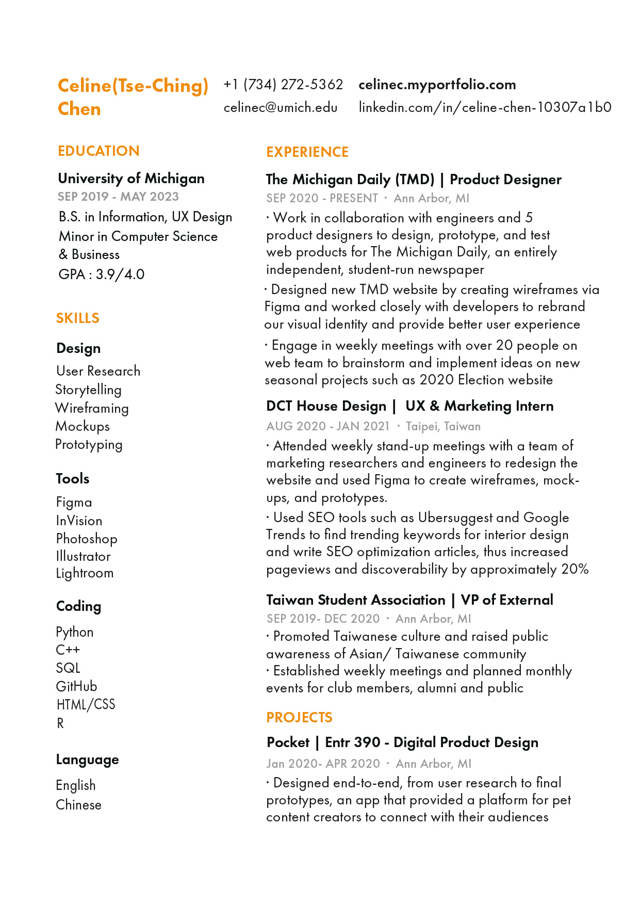

This is my resume!
This is my resume. I used yellow as the theme color since I think it represents me well. Growing up in a tropical island, I hope to bring that passion and brightness to people interacting with my works. Feel free to reach out to me if you have any questions.
